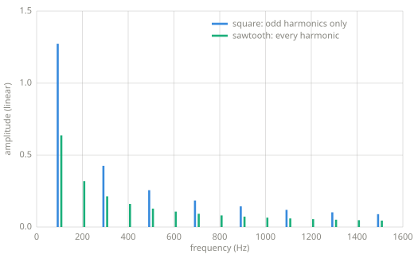
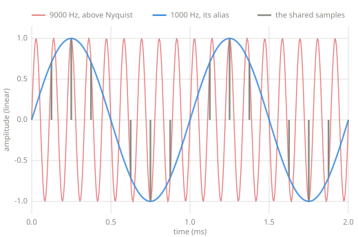

The frequency domain¶
Any repeating signal is a sum of sines. The frequency domain is the view that lists those sines: which frequencies a signal contains, and how much of each. Chapters 9 through 11 work in this view.
Chapter 8 — the frequency domain.
The claim¶
Chapter 4 promised that any signal can be described as a sum of sines. The precise statement, due to Fourier, is that a signal repeating \(f_0\) times per second can be built from sines at \(f_0\), \(2 f_0\), \(3 f_0\), and so on, each with its own amplitude and phase. The multiples are called harmonics, and \(f_0\) is the fundamental. This book uses the theorem rather than proving it, and the Learn more section points to proofs. The claim can also be checked numerically: if a square wave is a stack of sines, a measurement of how much of one sine it contains should match the theory.
Measuring one frequency¶
To ask how much of a probe frequency a signal contains, multiply the signal by a sine at that frequency and average. Where the signal moves with the probe the products are positive, where it moves against the probe they are negative, and any part of the signal unrelated to the probe averages toward zero. A cosine probe joins the sine probe because the signal's copy of the frequency can sit at any phase, and a phase the sine probe misses is one the cosine probe catches:
def sine_amount(x, sr, freq):
"""How much of one frequency a signal contains.
Multiply the signal by a probe sine and average, then do the same with
a probe cosine. Either probe alone would miss a signal that is out of
phase with it; together they catch every phase, and the magnitude of
the pair is the amplitude of that frequency in the signal.
Accurate when the signal covers whole cycles of freq.
"""
s = 0.0
c = 0.0
for n, v in enumerate(x):
angle = 2.0 * math.pi * freq * n / sr
s += v * math.sin(angle)
c += v * math.cos(angle)
return 2.0 * math.sqrt(s * s + c * c) / len(x)
A spectrum is this question asked at many frequencies:
def spectrum(x, sr, freqs):
"""The amplitude of each listed frequency: one probe per entry."""
return [sine_amount(x, sr, f) for f in freqs]
The waveforms, measured¶
The probe, run over the Chapter 4 waveforms, measures the harmonic content behind their brightness ranking.

Spectra of the square and sawtooth at 100 Hz, measured with the probe above. The sawtooth carries every harmonic and the square only the odd ones; both fall off as one over the harmonic number.
The measured fundamentals are the Fourier coefficients themselves: \(4/\pi\), about 1.27, for the square, and \(2/\pi\), about 0.64, for the sawtooth. A component can be larger than the signal that contains it. The square never leaves \(\pm 1\), but its fundamental alone swings to \(\pm 1.27\), and the higher harmonics cancel the overshoot.
The shapes' edges determine which harmonics exist and how fast they fall off. A jump contains every rate of change, so the square and sawtooth carry harmonics that fall slowly, as \(1/n\), and sound bright. The triangle has corners but no jumps, its harmonics fall as \(1/n^2\), and it sounds mellow. The sine's spectrum is a single stem at its own frequency. The listening comparison in Chapter 4 matches the measurement: jumps produce strong high harmonics, and corners produce weak ones.
Nyquist and aliasing¶
A sample rate of \(f_s\) samples per second can represent frequencies up to \(f_s / 2\), called the Nyquist frequency. This limit is the reason the book writes sample rates in samples per second. A sine needs at least two samples per cycle, one for each half, and \(f_s\) samples per second cannot give two samples each to more than \(f_s / 2\) cycles.
Sampling maps every frequency above the Nyquist frequency onto one below it. The error is called aliasing:

A 9000 Hz tone sampled at 8000 samples per second, generated with the book's sine. At every sample instant the 9000 Hz curve and the 1000 Hz curve agree, so the recorded samples are indistinguishable from a 1000 Hz tone, and 1000 Hz is what plays back.
The folded frequency is \(|f - k \cdot f_s|\) for whichever integer \(k\) lands the result below Nyquist. This is the mechanism behind the Chapter 3 and Chapter 4 warnings about naive waveforms: a sawtooth's harmonics continue past any Nyquist frequency, and everything past the limit folds back down as inharmonic content.
Pitfalls
- The probe assumes whole cycles. Measured over a window that cuts a cycle short, a probe reports some amplitude at frequencies the signal does not contain. The error is called spectral leakage, and Chapter 10 returns to it.
- The Nyquist frequency itself is not usable. Content at exactly \(f_s / 2\) has two samples per cycle with no room for phase, and real systems filter before it.
- A spectrum with no time axis describes a steady signal. Real audio changes, and describing change requires measuring spectra over short windows, which is the short-time analysis of Chapter 10.
Where this leads¶
Chapter 9 builds the effects that reshape a spectrum: gain per frequency. Chapter 10 computes every probe at once, which is the DFT. Chapter 11 edits the measured spectrum directly and turns it back into sound.
Learn more¶
- Steven W. Smith, The Scientist and Engineer's Guide to Digital Signal Processing, dspguide.com (free online) — Fourier analysis at an introductory depth.
- Julius O. Smith III, Mathematics of the DFT, ccrma.stanford.edu/~jos/mdft — the proofs this chapter defers.
- C. E. Shannon, "Communication in the Presence of Noise," Proceedings of the IRE, 1949 — the sampling theorem.